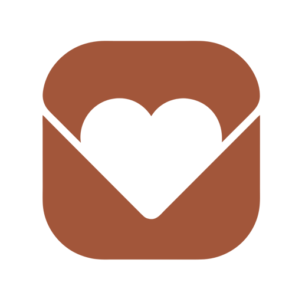
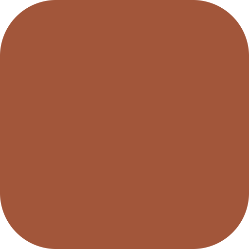

오늘도 사랑해 — 로고 색 변형
전부
원본 파일의 픽셀을 그대로 두고 색값만 치환
했습니다. 형태는 100% 원본. 대비는 흰 글자 기준.
① 색만 바꾼 것 — 원본 + 10색
② 디벨롭 — 원본 형태에서 기계적으로 파생
1. 컷아웃을 흰 면으로
뚫린 자리를 흰색으로 채움. 어두운 배경에서도 하트가 하트로 보임.

어두운 배경
48dp
2. 안전영역 대응
배경을 끝까지 채우고 마크를 61% 안으로. 원형 마스크에서 플랩이 안 잘림.

원형 마스크
48dp
3. 마크만 (모노크롬)
배경 없이 마크만 단색. 앱바·테마 아이콘용.
52px
24px 앱바